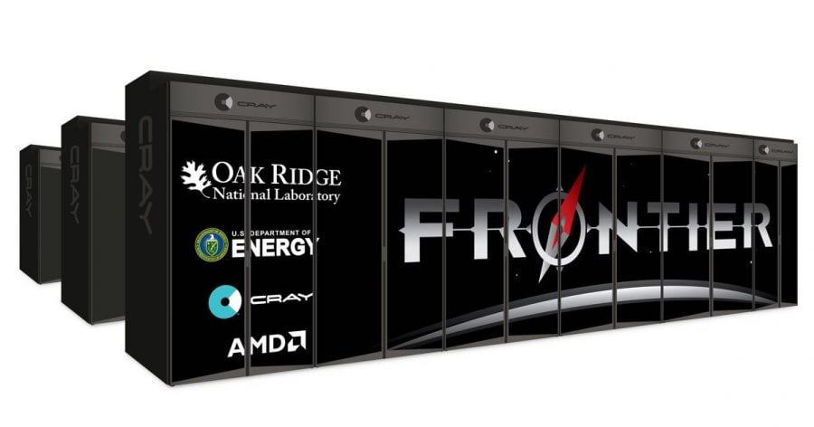

ကမ္ဘာ့ အမြန်ဆုံး ဆူပါကွန်ပြူတာ နံပတ် (၁) နေရာကို အမေရိကန် ပြည်ထောင်စုက ပြန်လည် ရရှိသွားပြီး ဖြစ်ပါတယ်။
အမေရိကန် ပြည်ထောင်စု တင်နက်စီ ပြည်နယ်က Oak Ridge National Laboratory မှာ တပ်ဆင်လိုက်တဲ့ exascale Frontier system ဆူပါ ကွန်ပြူတာ ကြီးဟာ တစ်စက္ကန့်ကို တွက်ချက်မှုပေါင်း 1.102 exaflop ပြုလုပ်နိုင်တယ်လို့ ဆိုပါတယ်။ ဒါကို အလွယ် ပြောရရင် တစ်စက္ကန့်ကို တွက်ချက်မှုပေါင်း 1,000,000,000,000,000,000 ကျော် ပြုလုပ်နိုင် တာပဲ ဖြစ်ပါတယ်။
ဒီ အမြန်နှုန်းဟာ ဒုတိယ နေရာမှာ ရှိတဲ့ ဂျပန်က ဆူပါ ကွန်ပြူတာ ကြီးထက် နှစ်ဆ ပိုမြန်တဲ့အမြန်နှုန်း ဖြစ်ပါတယ်။ ဒီ နှုန်းဟာ ရှုပ်ထွေးတဲ့ သင်္ချာ ညီမျှခြင်း တွေကို ဘယ်လောက် မြန်မြန် တွက်ချက် နိုင်သလဲ ဆိုတဲ့ အပေါ် အခြေတည်ပြီး တိုင်းတာထားတာ ဖြစ်ပါတယ်။
အခု ဆူပါ ကွန်ပြူတာ ကြီးမှာ တွက်ချက်မှု ယူနစ် CPU core ပေါင်း ၈,၇၃၀,၁၁၂ ပါဝင်ပါတယ်။ (ပုံမှန် အိမ်သုံး ကွန်ပြူတာ တစ်လုံးမှာ အများအားဖြင့် CPU core ၂ လုံးကနေ ၈ လုံးကြား ပါဝင်ပါတယ်။) ဒီ ကွန်ပြူတာ ကြီးထဲမှာ သုံးတဲ့ CPU တွေက AMD EPYC 64C 2GHz processors တွေနဲ့ တမျိုးအစားတွေ ဖြစ်ပါတယ်။
အခု ဆူပါကွန်ပြူတာ ကြီးကို အခုအခါ လက်တွေ့ စမ်းသပ်မှုတွေ ပြုလုပ်နေပြီး မကြာမီမှာ အမေရိကန် ပြည်ထောင်စု စွမ်းအင်ဌာန အတွက် စတင် တာဝန် ထမ်းဆောင်တော့မှာ ဖြစ်တယ်လို့ သိရပါတယ်။
အခု ကွန်ပြူတာ ကြီးဟာ 1 exaflop/s အမြန်နှုန်းကိုပထမဆုံး တရားဝင် ကျော်ဖြတ်နိုင် ခဲ့တဲ့ ဆူပါ ကွန်ပြူတာ ဖြစ်ပါတယ်။ တရုတ် ဆူပါ ကွန်ပြူတာဟာ ဒီ အမြန်နှုန်းကို ကျော်ဖြတ် နိုင်ခဲ့တယ်လို့ ကောလာဟာလ တွေ ထွက်ခဲ့ပေမယ့် တရားဝင် တိုင်းတာထားတဲ့ မှတ်တမ်းတော့ ထုတ်ပြန် ကြေငြာထားခြင်း မရှိ ခဲ့ပါဘူး။
အခု ဆူပါကွန်ပြူတာဟာ ကမ္ဘာ့ အမြန်ဆုံး ဖြစ်ပေမယ့် သူ့ရဲ့ စွမ်းအင် သုံးစွဲမှု ကတော့ သူနဲ့ အလားတူ အခြား ဆူပါ ကွန်ပြူတာ တွေထက် စာရင် ပိုမို နည်းပါး တယ်လို့ ဆိုပါတယ်။ ကွန်ပြူတာ CPU core တစ်ခုချင်းစီ အလိုက် စွမ်းအင် လိုအပ်မှု အနည်းဆုံး အဆင့် ဇယားမှာ အခု ကွန်ပြူတာဟာ ဒုတိယ နေရာမှာ ရှိနေတယ်လို့ ဆိုပါတယ်။
ကမ္ဘာ့ ဒုတိယ အမြန်ဆုံး ဆူပါ ကွန်ပြူတာ ကတော့ ဂျပန် နိုင်ငံက Fugaku system ဖြစ်ပြီး တစ်စက္ကန့်ကို ၄၄၂ petaflops အမြန်နှုန်း ရှိပါတယ်။ ဒီ အမြန်နှုန်းဟာ အမေရိကန် ဆူပါ ကွန်ပြူတာထက် ထက်ဝက်မက ပိုနှေးပါတယ်။ ဒီ ဆူပါကွန်ပြူတာဟာ ၂၀၂၀ ဇွန်လက စပြီး ကမ္ဘာ့ အမြန်ဆုံး အဆင့် (၁) နေရာကို ပြိုင်ဖက်မရှိ ရယူထား ခဲ့တာ ဖြစ်ပါတယ်။
အမေရိကန် စွမ်းအင် ဌာနရဲ့ ကြေငြာချက် အရ ဒီလို ဆူပါ ကွန်ပြူတာ အနည်းဆုံး နှစ်လုံး တည်ဆောက် သွားမယ်လို့ ဆိုပါတယ်။ ဒီ ဆူပါ ကွန်ပြူတာတွေ အားလုံးအတွက် စုစုပေါင်း ကုန်ကျစားရိတ် အမေရိကန် ဒေါ်လာ ၁.၈ ဘီလီယံ (သန်း ၁,၈၀၀) ကုန်ကျမယ်လို့ သိရပါတယ်။
ဒီ ကွန်ပြူတာ တွေကို အဏုမြူ ဓါတ်ပေါင်းဖို တွင်းက ဖြစ်စဉ်တွေကို တွက်ချက်မှုများ၊ မျိုးရိုးဗီဇ ဆိုင်ရာ သုတေသန နဲ့ အခြား သိပ္ပံ နဲ့ နည်းပညာ သုတေသန တွေအတွက် အသုံးပြုသွားမှာ ဖြစ်ကြောင်း စွမ်းအင်ဌာနရဲ့ သတင်း ထုတ်ပြန်ချက် အရ သိရပါတယ်။
အတည် မပြုနိုင်တဲ့ ကောလဟာလ တွေအရ တရုတ်ပြည်ဟာ ဒီလောက် အမြန်နှုန်း ရှိတဲ့ ဆူပါ ကွန်ပြူတာ နှစ်လုံး ပိုင်ဆိုင် ထားတယ်လို့ ဆိုပါတယ်။ ဒါပေမယ့် ဒီ ဆူပါကွန်ပြူတာ တွေရဲ့ စမ်းသပ်မှု ရလဒ်တွေကိုတော့ တရားဝင် တင်ပြ လာတာ မရှိ သေးပါဘူး။
လက်ရှိ အချိန်အထိ တရုတ်ပြည်ရဲ့ အမြန်ဆုံး ဆူပါ ကွန်ပြူတာဟာ ကမ္ဘာ့ အဆင့် (၆) ရှိတဲ့ Sunway TaihuLight ဖြစ်ပါတယ်။ ဒီ ဆူပါ ကွန်ပြူတာဟာ ၂၀၁၆ နဲ့ ၂၀၁၇ ခုနှစ်များ တုန်းက ကမ္ဘာ့ အဆင့် (၁) နေရာကို နှစ်နှစ် ဆက်တိုက် ရယူ ထားခဲ့ကြတဲ့ ကွန်ပြူတာ ဖြစ်ပါတယ်။
Ref: 1.1 quintillion operations per second: US has world’s fastest supercomputer
ကမ္ဘာ့အမြန်ဆုံး ဆူပါကွန်ပြူတာ အမေရိကန် တီထွင်

August 8, 2022
Other Posts
- Black hole တွေ တိုက်မိရာက ထွက်လာတဲ့ ဆွဲငင်အားလှိုင်း အမြောက်အများ ဖမ်းမိ
- AI နည်းပညာ ပြိုင်ပွဲမှာ တရုတ်က အနိုင်ရသွားပြီလို့ ပင်တဂွန်ရဲ့ ဆော့ဝဲအရာရှိချုပ်ဟောင်းပြော
- ကြောင်ပြုစုနည်း အခြေခံ
- အလင်းရောင်ထွက်တဲ့ အပင် တီထွင်အောင်မြင်
- ဇီဝနည်းနဲ့ လေထဲက လျှပ်စစ်ထုတ်မယ်
- မစ်ကီးဝေး ဂလက်ဆီရဲ့ ဗဟိုက ပေါက်ကွဲမှုများ
- မာကျူရီဂြိုလ် စူးစမ်းရေး အာကာသယာဉ် ရောက်ရှိ
- နေအဖွဲ့အစည်း
- မိုးကြိုးလွှဲ ဘယ်လို အလုပ်လုပ်လဲ
- Wormholes တွေကို ဖြတ်ပြီး ခရီးသွားဖို့ ဖြစ်နိုင်မလား